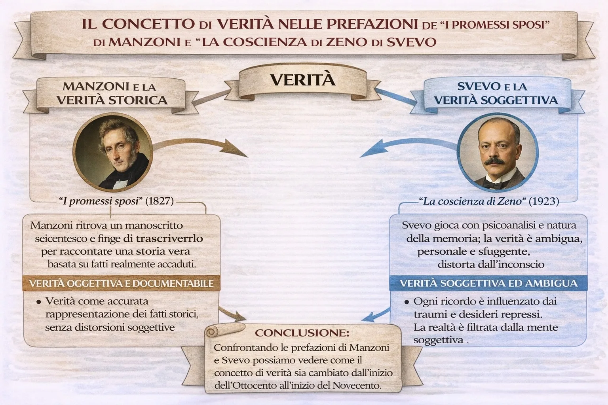

Il concetto di verità: Manzoni e Svevo
Nel romanzo ottocentesco e in quello novecentesco cambia profondamente il modo di intendere la verità. Un confronto molto interessante è quello tra la prefazione de I promessi sposi di Alessandro Manzoni e la prefazione de La coscienza di Zeno di Italo Svevo.
Queste due prefazioni non servono solo a introdurre il romanzo, ma rivelano anche due modi diversi di concepire la realtà, la storia e la mente umana.
Nodi della lezione
- Manzoni: verità storica e documentabile
- Svevo: verità soggettiva e ambigua
- Dal realismo ottocentesco alla crisi novecentesca
1. Introduzione
Nel romanzo ottocentesco e in quello novecentesco cambia profondamente il modo di intendere la verità. Un confronto molto interessante è quello tra la prefazione de I promessi sposi di Alessandro Manzoni e la prefazione de La coscienza di Zeno di Italo Svevo.
Queste due prefazioni non servono solo a introdurre il romanzo, ma rivelano anche due modi diversi di concepire la realtà, la storia e la mente umana.
2. Manzoni e la verità storica
Nella prefazione dei Promessi sposi, Manzoni utilizza un espediente letterario molto noto: afferma di aver trovato un antico manoscritto scritto da un anonimo autore del Seicento.
Secondo questa finzione narrativa, Manzoni non sarebbe l'autore della storia, ma soltanto colui che la trascrive e la rende comprensibile ai lettori moderni.
Questo artificio ha uno scopo preciso: far apparire la vicenda come una storia vera, basata su fatti realmente accaduti.
Per Manzoni la verità ha una dimensione storica e oggettiva. Il romanzo deve essere fondato su eventi reali e documentabili, e lo scrittore cerca di ricostruire la realtà con la massima fedeltà possibile.
In questo modo il romanzo assume quasi il valore di una testimonianza storica.
3. Svevo e la verità soggettiva
Completamente diverso è l'approccio di Svevo nella prefazione de La coscienza di Zeno.
Qui a presentare il romanzo non è l'autore, ma un personaggio: il dottor S., lo psicoanalista che ha in cura Zeno.
Il medico avverte subito il lettore che il racconto di Zeno non può essere considerato completamente affidabile. I ricordi del protagonista sono mescolati a menzogne, autoinganni e deformazioni della memoria.
La ragione di questo problema è legata alla nuova concezione della mente umana sviluppata dalla psicoanalisi di Freud.
Secondo questa visione, l'uomo non controlla completamente i propri pensieri: la memoria, i ricordi e le interpretazioni della realtà sono influenzati dall'inconscio, dai desideri repressi e dai traumi.
Per questo motivo il racconto di Zeno è pieno di contraddizioni e ambiguità.
La verità non appare più come qualcosa di oggettivo, ma come qualcosa di incerto e soggettivo.
4. Il cambiamento tra Ottocento e Novecento
Il confronto tra queste due prefazioni mostra un cambiamento culturale molto importante.
Nell'Ottocento, rappresentato da Manzoni, prevale l'idea che la realtà possa essere conosciuta in modo oggettivo.
Nel Novecento, con Svevo, questa sicurezza entra in crisi: la realtà non è più qualcosa di stabile e chiaro, ma è filtrata dalla mente dell'individuo.
Questo passaggio riflette la trasformazione del pensiero europeo tra i due secoli.
5. Conclusione
Le due prefazioni mostrano quindi due modi opposti di intendere la verità.
Per Manzoni la verità è storica, oggettiva e documentabile.
Per Svevo la verità è soggettiva, ambigua e legata alla complessità della mente umana.
Attraverso questo confronto possiamo capire come la letteratura rifletta i cambiamenti profondi della cultura e del pensiero nel corso del tempo.
Come leggere questa pagina
Prima guarda la mappa. Poi usa la sintesi per fissare i passaggi logici. Solo dopo apri la lezione completa: così il testo non ti cade addosso come un blocco unico, ma come sviluppo di un ordine già visto.
Indice rapido
Su iPad e iPhone: condividi la pagina e scegli “Aggiungi a Home”. Su Android: usa “Installa app”.